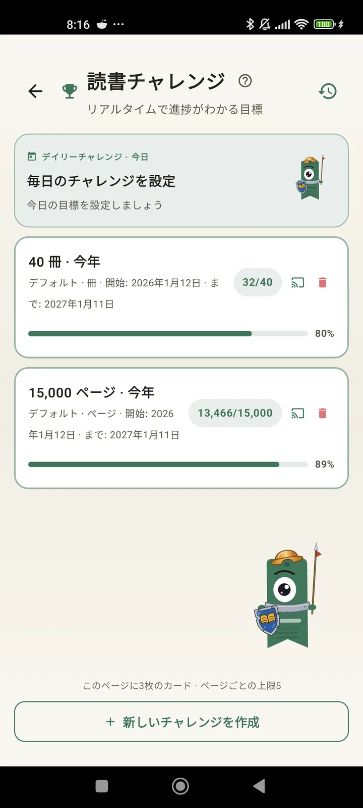

読書家としての自分を知ろう
チャレンジ、Bingo、ウィジェットなど、読書をとことん楽しむための機能。3.7の新機能：チャレンジとBingoのウィジェット。

読書チャレンジ
ページ数、連続記録、ジャンルで目標を設定。進行中のチャレンジは無料で15個まで、Proなら無制限。さらに、上限に含まれないカスタマイズ可能なデイリーチャレンジも。

デイリーチャレンジ
毎日新しい目標。真夜中までにチャレンジを達成して、連続記録をつなげよう。

読書Bingo
毎月二つの新しいBingoと、テーマ別のマス。行、列、またはカード全体をそろえよう。

週間サマリー
毎週月曜日に、あなたの一週間をひと目で：読んだページ数、合計時間、連続記録、そして前の週との比較。

月間まとめ
月が終わると、Lecturameterがまとめてくれます：ページ数、時間、読了した本、日ごとのペース、そして今月の一冊。

Bingoウィジェット Pro
今月のBingoカードをいつでも目に入る場所に。達成したマスとそろえたラインも表示。

本のウィジェット 無料
読んでいる本をホーム画面で確認：表紙、タイトル、著者、ページ数、進捗率をいつも最新で。好きな場所に合わせてサイズ変更できます。
マジでこのアプリはセラピーみたい。一日に数ページしか読めなかったのが、今は一日20ページくらい読めるようになって、まだ伸びてるユーザーからメールで届いた感想

月間比較 Pro
アプリを開かずに最近の数か月をさっと確認。各月のページ数を棒グラフで表示し、今月をハイライト。先月より調子がいいか悪いか、ひと目でわかります。

チャレンジウィジェット Pro
進行中のチャレンジとその進捗をホーム画面に。表示するものはチャレンジ画面から選べます。